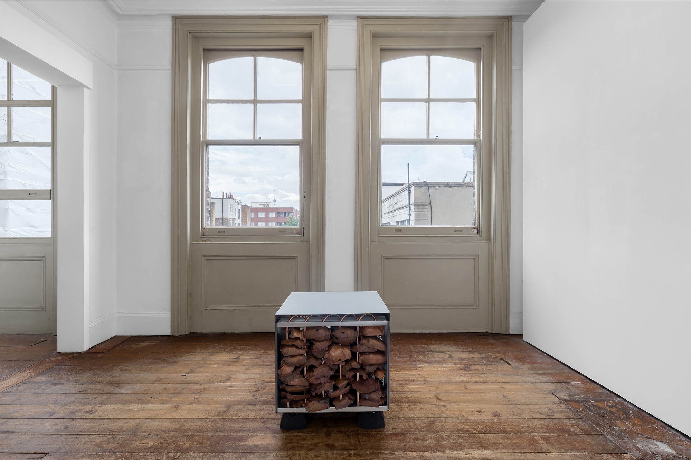
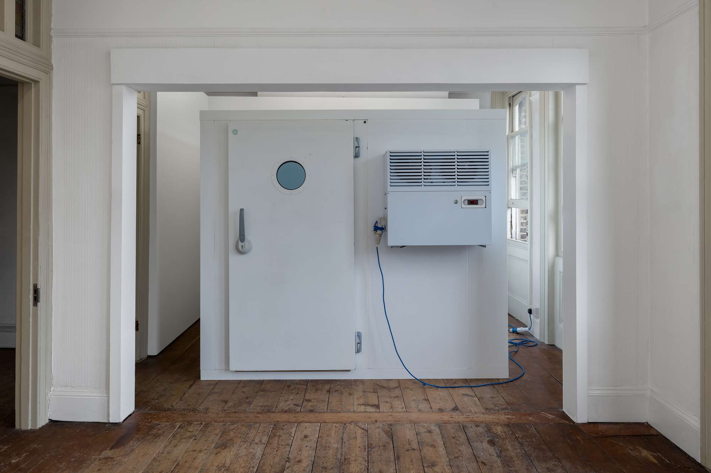
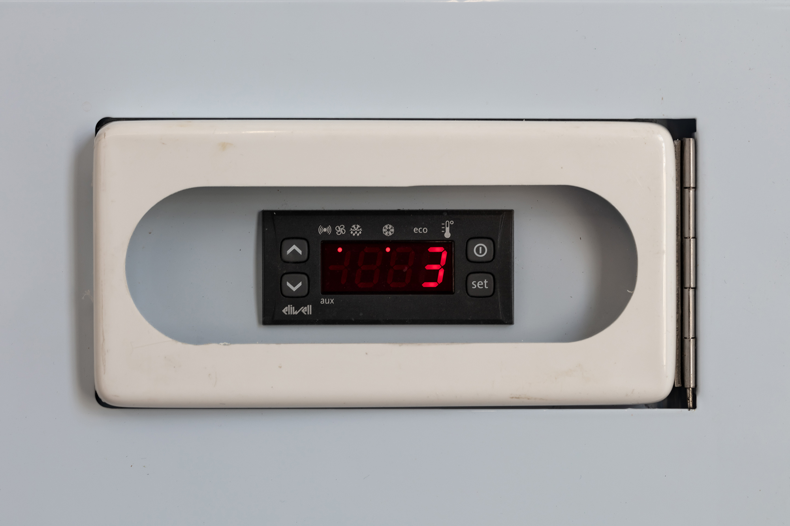
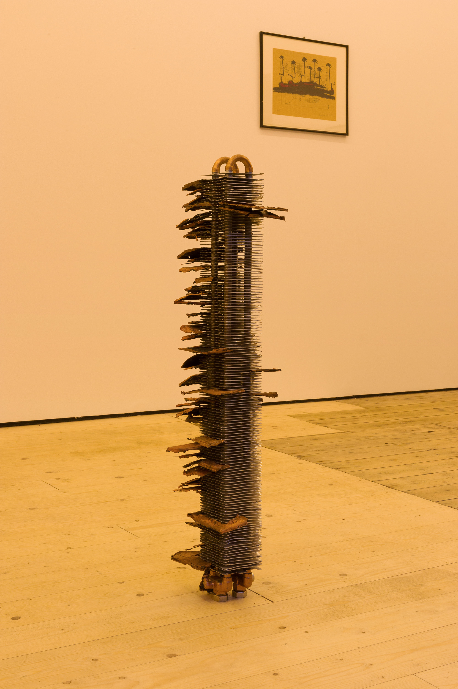

Fudge, 2024, Copper platings of a borrowed object, galvanized steel, aluminum heat exchanger, mobile cold room
Installation View: Survival Bias, Brunette Coleman, London, UK
A beloved cat's urn is borrowed from a local stockmarket investor and copper plated. Those platings, being highly thermally conductive, are resourced into the component parts of various cooling system, allowing them to take part in the netweork of artifially coold climates that wrap the globe, stalling decay, productivizing preservation. Fudge actively takes part in this cold chain, outside of, within, and attached to a working mobile cold room installed in the gallery, striving to maintaining a constant 2°C in the summer. As the cold room cools, turning on it off intermitentatly, it creates heat, warming the surrounding gallery space.
***

Who owns the sun?, 2024, salvaged construction materials
Installation View: If you stand close enough to the action, with a glass to the wall, you can hear the sound of teeth being gritted, Jacqueline, Athens, GR
A series of passive solar heaters, made from building materials gathered over 4 days from the markets, dumpsters, and construction sites in Patisia, Athens.
***
Liquidation, 2024, Greenhouse Humidifier, Artificial Perspiration, Real Estate.
Installation View: Courtplay, Future site of the Hartwig Museum, Amsterdam, NL
A greenhouse humidifier fills the atrium of the former courthouse of Amsterdam Zuid, recently sold by the dutch government to the Hartwig Foundation to become a contemporary art museum. Periodically releasing artificial sweat, the installation worked as a clock for an immersive theater piece. Visitors were invited to experience the work over a 24 hour period, while the building was actively being renovated.
***

Degrowth, 2022, Copper Platings of borrowed object, aluminum heatsink.
Installation View: gilts,gifts, Cento, Glasgow, UK
***
L1quidation, 2022, Video, 18:00.
Installation View: Corpus, bologna.cc, Amsterdam, NL
Part one of an ongoing series, L1quidation records both the related installation and the buildings it occupies. From several POV stylizations, including virtual home tour, 3D rendering and horror, L1quidation documents the historical revision of each building by its state for economic gain, with the humidifier as the ghostly and efficient protagonist.
***
Why should we keep these buildings?, 2022, Video.
This video, narrated by a conversation with the new owner of Oosteinde 44, is comprised of cellphone screen recordings, as it uses a free 3D scanning app to digitize the current state of two government-sold buildings. The resulting 3D models, though not pictured in the video, permanently encapsulate the fleeting liminal moment of the separate buildings’ lives, occupied in between their original function and their immanent renovations to serve an alternative economic purpose.
***


Hard shelled stretch marks I’m thinking of zeros of carbon footprints and bank accounts together with smiles. What do you think these cultural ventures teach your children?, 2021, Copper platings of borrowed objects. Installation view: Insiders’ Grave, De Ateliers, Amsterdam, NL

13.42 grams. Grief, eclipsed fresh, 2021, Copper platings of borrowed objects. Installation view: Insiders’ Grave, De Ateliers, Amsterdam, NL
So of the things you’ve let go, the fact that this stays registers ah some sort of accompaniment between species, teleports across borders and friendships., 2021, Copper platings of borrowed object. Installation view: Insiders’ Grave, De Ateliers, Amsterdam, NL
Insiders' Grave, 2022, Installation view: Snooperverse, HISK, Brussels, BE
Insiders’ Grave, 2021, Copper platings of borrowed objects.
Insiders’ Grave is a series of sculptures made from objects borrowed from several stock market investors. I ask each shareholder the same question: “What is an object that you would take to your grave?” I take these shareholders’ possessions to my studio where I use electricity to apply a thin copper coating, otherwise known as a plate. Once I have the copper plate, I remove it from the object, returning the possession to its original owner undamaged.
***


Incoming, 2021, Rotary laser, neighbors.
Incoming takes places across several precarious spaces. It consists of a laser structure, derived from the rotary laser used in urban development and land surveying, that is used to make contact with my neighbors. I ask them if they are interested in participating in the work, placing the light source of the sculpture within their private apartment, projecting the emitted beam into my studio. In return, they may keep the laser device as a gift.
***

Liquidation (WorkingTitle), 2020-Ongoing. DIY Industrial Humidifier, Artificial Perspiration, Real Estate.
A homemade industrial-strength humidifier inhabits several properties owned and auctioned by the Dutch government. The humidifier rhythmically fills the surrounding space with a mist of artificial sweat, moistening the surfaces of the building.The occupants and the architecture of the building are the only witnesses as the dense moisture and scent clings to them.